a16z 半年一期的消费级 AI 应用 Top 100，10 月 5 日出了第 7 期。这一期第一次加入了美国消费者的支出数据，它揭示的付费结构，比排名本身更有信息量。
三年前 a16z 做第一期榜单时，方法很简单：把全球 AI 原生网站按访问量排个序。那时候几乎所有人用 AI 的方式都一样，打开浏览器，在一个输入框里敲 prompt。
三年后，这个方法已经不够用了。AI 跑进了桌面 app、跑进了 iMessage，大量花钱的行为在流量榜上根本看不见。所以第 7 期做了一个关键改动：在 web 流量榜和移动端 MAU 榜之外，第一次加了一张按美国消费者银行卡支出排的榜，数据来自 YipitData。
我把三张榜和正文从头到尾读了一遍。流量榜告诉你谁被用得最多，支出榜告诉你谁真的在赚钱，这两件事的差距，比我预想的大得多。
一、三张榜单：支出榜偏创作工具，流量榜偏助手和修图
先交代榜单是怎么排的：
入选门槛是生成式 AI 必须是产品体验的核心，AI 原生公司和加了 AI 的老产品都可以上榜。本期起，主打 NSFW 用途的产品单列、不再和其他产品一起排。
提醒 支出榜是美国单一市场的样本数据，不等于公司总收入。Gemini 没有出现在支出榜上，原因是它的收入没法和 Google 的其他消费业务拆开。
三张榜的前十名放在一起看：
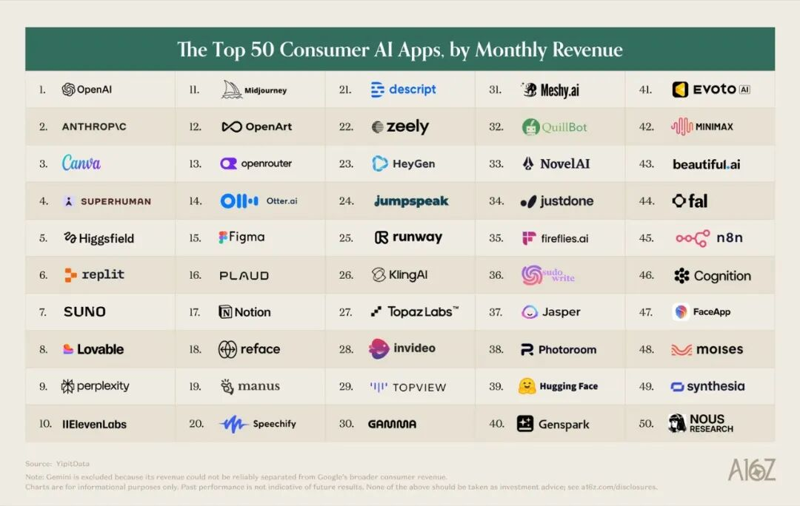
支出榜 Top 50
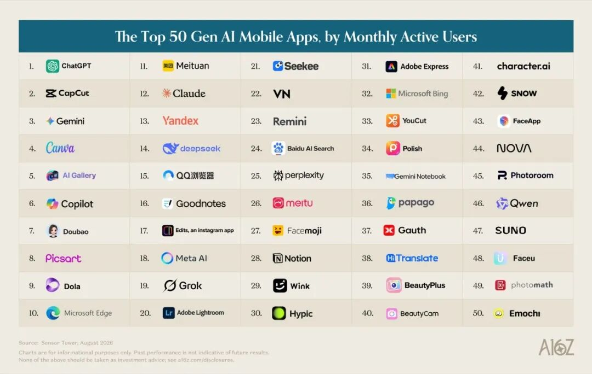
移动端 Top 50
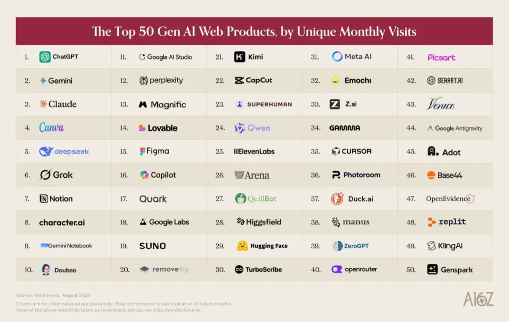
web 端 Top 50
三张榜各有各的长相：
ChatGPT（支出榜上记作 OpenAI）是唯一一个三张榜都排第一的产品。
中文读者值得多看一眼的是中国公司的位置。我按母公司在中国大陆数了一遍（Manus、Genspark 这类中国团队创立、总部在海外的不算），报告本身没有做这个统计：
移动榜 50 个席位里中国产品占了近三成，大部分是修图、剪辑和拍照这类工具。
二、流量榜趋于稳定，支出榜改写了排名
这一期只有 11 个产品是首次上榜，七期里最少。三年下来，流量榜的面孔越来越固定。
但支出榜一加进来，局面就变了。支出榜前 50 里，有 29 个在 web 榜和移动榜上都找不到。支出数据能覆盖到流量榜看不见的产品，比如桌面 app、跑在现成通讯工具里的 agent。
同一个产品，按流量排和按支出排，名次能差出一大截：
报告的解释是，同一个产品的两个名次能差多远，取决于它对重度用户的变现有多用力。Replit、Higgsfield 流量排名不高，支出排名却很靠前；Notion 正好相反。
三张榜都进前 50 的只有 7 个：ChatGPT、Claude、Canva、Suno、Perplexity、Notion、Photoroom。三家模型公司（ChatGPT、Claude、Suno），两个 AI 原生应用（Perplexity、Photoroom），两个加了 AI 的老产品（Canva、Notion）。
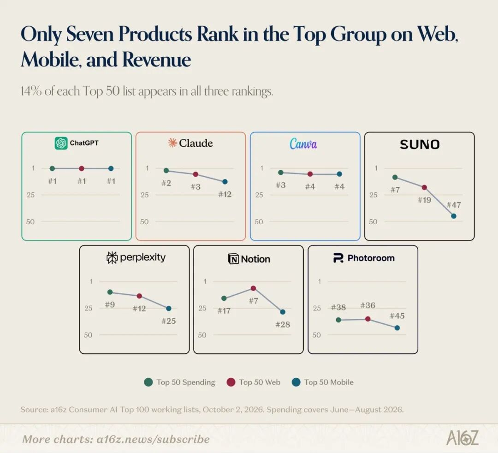
三张榜都进前 50 的只有 7 个产品
还有一个数字很能说明问题：为一个 AI 产品付费的人里，只有 13% 会再为第二个 AI 工具付费。付费用户高度集中在单个产品上。
三、消费级 AI 宽而浅，付费呈幂律分布
报告开头有一句话，我觉得是整份报告的总纲：
Consumer AI usage is wide, but not very deep…for almost everyone.
消费级 AI 的使用面很宽，但不深……对几乎所有人都是这样。
「宽」是指用的人多。按皮尤研究中心 2026 年 6 月的调查，近一半美国人说自己在用 AI。「浅」是指用得不深、付费更少：每天都用的只有 25%；到 8 月，在 YipitData 的美国样本里，为 ChatGPT、Gemini、Claude 任意一家付个人订阅的只有 4.5%。一年前这个数字是 2.1%，翻了一倍，但绝对值依然很小。
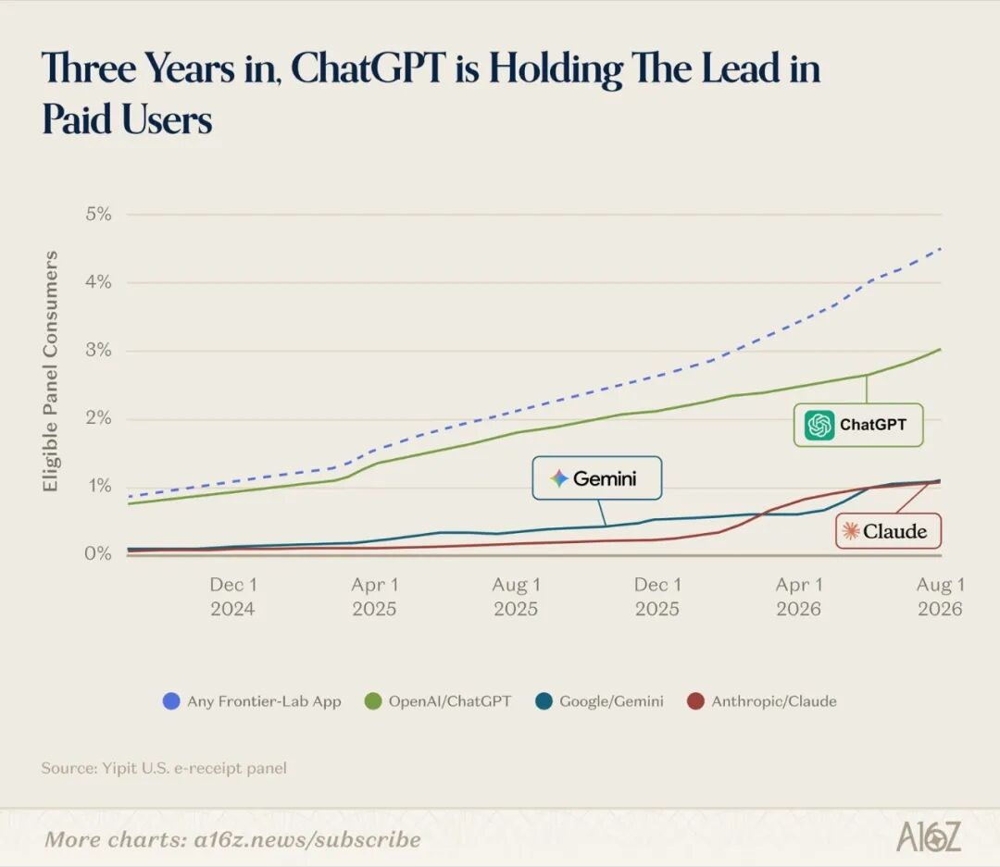
付费渗透率：三年过去，ChatGPT 仍然领先
更极端的是付费内部的分布。在这一小撮付费用户里：
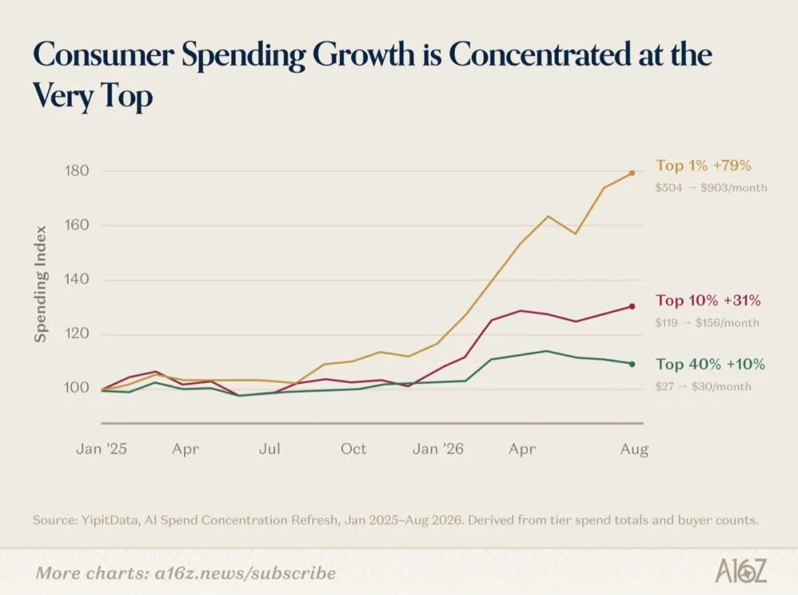
支出增长集中在最顶端
一边是每月 25 美元，差不多就是一份基础订阅的价格；一边是每月 903 美元、还在快速往上走。这是典型的幂律分布：极少数人贡献了不成比例的收入。
这前 1% 是什么人？报告给的画像是：不太像普通消费者，更像 prosumer（专业型个人用户），买软件是为了做东西、创作、把工作干完。他们比普通付费者更爱买三类工具：
报告对这群人的判断是：
In these users, consumer AI has found its first real market: people who pay — often a lot — for tools that help them build, create, and get work done.
在这群用户身上，消费级 AI 找到了它第一个真正的市场：愿意付费、而且往往付很多的人，买的是帮他们构建、创作、把工作干完的工具。
这个判断我很认同。这群人买 AI 的逻辑和买生产工具一样：写代码、做视频、搭自动化流程，花出去的钱能换回产出，所以花得起、也愿意越花越多。
这也意味着，消费级 AI 目前最赚钱的市场，其实是一个个人买单的生产力市场，还没真正进入大众的日常生活。报告自己也说，要触达其余的人，很可能需要不一样的产品。
四、Claude 靠高价档追平 Gemini，盛夏又被 ChatGPT 拉开
ChatGPT 还是那个领先者，这一点从 2023 年 9 月第一期榜单到现在都没变。但第二名之后的格局变化很大：
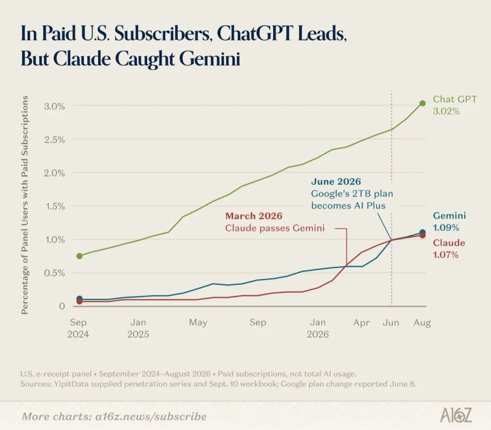
美国付费订阅：ChatGPT 领先，Claude 追上了 Gemini
这一期最大的变化是 Claude 成了明确的第三名。2023 年 9 月第一期 web 榜上还没有 Claude，现在它的流量已经超过 DeepSeek 和 Perplexity。更关键的是付费：今年早些时候，Claude 的美国个人付费订阅数超过了 Gemini。即使 Google 把老的付费用户整体迁进 AI 套餐、把订阅数抬了一把，两家现在也只是持平。
Claude 的上升靠三样东西：新产品（1 月的 Cowork、4 月的 Claude Design）、新模型（6 月的 Fable 5），以及 2 月下旬 Anthropic 和五角大楼的争议带来的关注度——那次 Claude 第一次登上美国免费 app 榜第 1。
变现方式上，Anthropic 明确说过 Claude 不放广告，只靠订阅赚钱，而且推得很用力。Claude 付费用户里有 7.3% 在每月 100 美元起步的 Max 档，ChatGPT 和 Gemini 同价位档的占比只有 1.1% 和 1.3%。
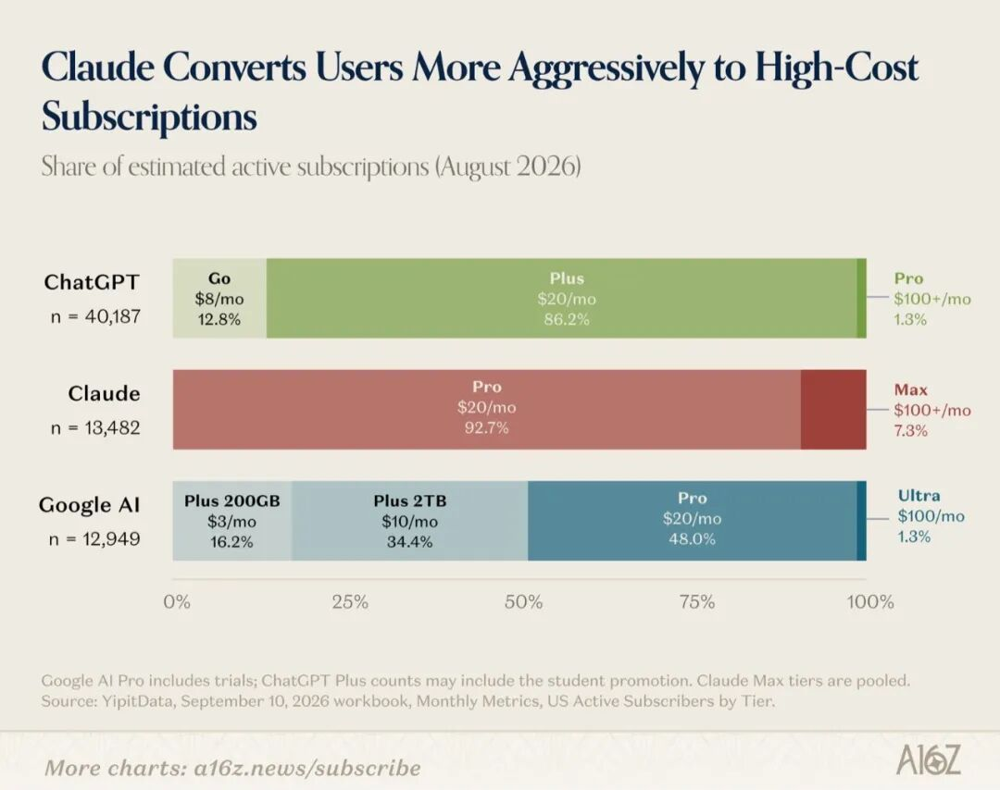
Claude 把用户转向高价档更积极
但到了盛夏，风向变了。7、8 月 Claude 的日均会话数下降，新增订阅放缓、流失上升；ChatGPT 则靠 7 月发布的 GPT-5.6 Sol、Terra、Luna 和新推出的 ChatGPT Work 重新加速，拿回了净新增订阅第一。
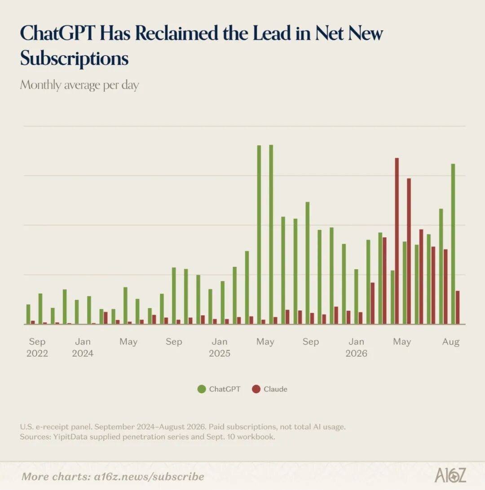
ChatGPT 重新拿回净新增订阅第一
这段起落，和我自己的观察是对得上的。
Claude 上半年涨得快，根子在模型。Opus 系列在编程上的效果领先了一段时间，Claude 最早也是在写代码这类专业圈子里先火起来的：开发者自己先用，在社区里分享，再带着团队一起用。这正是前面说的那批 prosumer，愿意为效果付钱，也付得起高价档。
但同一批人对 Anthropic 的感情也在变。模型本身有短板：Opus 5.5 之前的几个版本，编程之外的效果一般，回答机械、不太像人说话；安全策略上的拒答和各种限制，也常让人摸不着头脑。产品之外还有账号和用量：封号、地区限制、用量额度一次次收紧，这些做法落在每天靠它干活的人身上，代价很具体，工作流可能说断就断。大家评价一个工具，开始不只看模型强不强，也看它靠不靠得住。
OpenAI 这半年的做法几乎反过来。GPT-5.6 和 Codex 的效果追上来之后，性价比成了最大的卖点；Codex 的用量额度隔一阵就被官方整体重置一次，Codex 创始工程师之一、现在管 OpenAI 核心产品与平台的 Tibo Sottiaux，在开发者圈里出名，很大程度上就是因为他经常给大家重置用量；封号策略也没有那么严。再加上 Codex 直接并进了 ChatGPT（OpenAI 把这次整合叫 the merge），一份订阅两边都能用。对那批写代码的 prosumer 来说，换过去的理由一下子多了。
不过 OpenAI 也在算账。9 月 29 日的 DevDay 上，OpenAI 推出了每月 500 美元的 Pro 500 档；同时宣布从 10 月 30 日起，Pro 200 档在 ChatGPT Work 和 Codex 里的用量，从 Plus 档的 20 倍降到 10 倍，直接减半。前半年靠宽松的额度换增长，现在开始往收入和利润上收。
两家走的其实是同一条路，只是处在不同阶段：增长期放宽额度抢用户，收入压力上来就收紧额度、加高价档。这批 prosumer 对价格不算敏感，对「靠不靠得住」很敏感。模型效果决定他们来不来，用量和账号策略决定他们留不留。
回到报告本身。它认为，现在的问题已经不是「谁在赢」，而是「每家怎么做好自己的那块机会」。三家的用户本来就不太重叠：美国的 ChatGPT 订阅者里，只有 8% 同时订阅了 Claude。
用户画像不同，至少部分是因为产品在朝不同方向走。过去六个月三家一共发了 127 个新品：
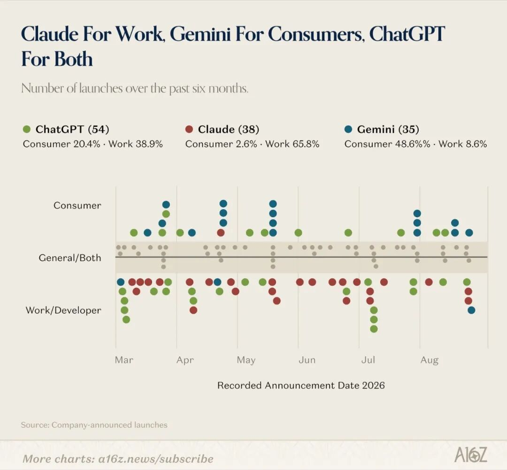
Claude 做工作、Gemini 做消费、ChatGPT 两头做
结果也体现在用户画像上：ChatGPT 付费用户的性别和收入分布比 Claude 更均衡；按州看，除了加州、蒙大拿和马萨诸塞，其余 47 个州都是 ChatGPT 领先 Claude。
三家的新品方向已经分开：Claude 的新品 65.8% 面向工作和开发者，Gemini 48.6% 面向消费者，ChatGPT 两头都做。ChatGPT 订阅者里只有 8% 同时订阅 Claude，它们争的已经不是同一批用户。
五、个人 agent 起步，最难的是让普通人提起兴趣
今年 3 月第 6 期发布时，a16z 的判断是 OpenClaw 这类 agent 大多数普通人还用不了，但迟早会用上。六个月后，Instinct、Tomo、Poke、Lindy、Town 这几个创业公司的 agent 产品都报出了数十万用户；大公司也带着自家 agent 入场了：Meta 的 Muse、OpenAI 的 Dots、xAI 的 Grok Bot。
这批 agent 大多想做到「哪里都能找到它」：像联系真人助理一样，你可以给它发短信、发邮件、打电话。当下最热门的入口是 iMessage：8 月爆红的 Instinct 就从 iMessage 起家，DoorDash 后来也上线了自己的 iMessage 下单 agent。
交易数据最亮眼的是 Instinct：
Meta 的 Muse 9 月 9 日上线，网页、桌面、手机 app 和 WhatsApp 里都能用。据报道首周日活 25 万，不到一个月下载量破 500 万，比 ChatGPT 和 Claude 都快。
但报告紧接着泼了一盆冷水：
But as with every new consumer product, the primary battle is against apathy.
但和每一个新的消费产品一样，最主要的仗是对抗用户的无动于衷。
Muse 目前只在美国和加拿大上线，而 Meta 自己的 Threads 在同样两个市场，头 22 天就拿下了超过 1,500 万次下载。拿自家的上一个爆款一比，Muse 的成绩就显得平淡了。
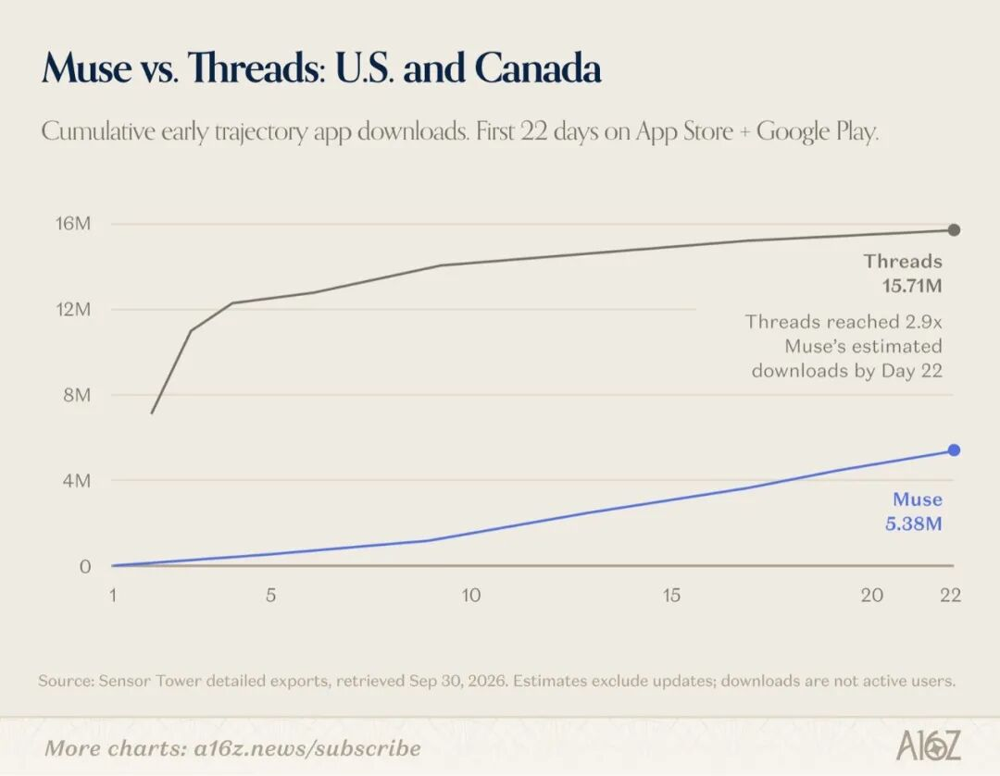
Muse 和 Threads 在美加两地的下载对比
报告作者、a16z 合伙人 Olivia Moore 在配套播客里给了一个原因：Muse 的分发远没有 Threads 当年那么激进，部分原因是服务这些用户的成本高得多。
there's a much higher cost to serve these users. So they don't want it to get too big too fast.
服务这些用户的成本要高得多，所以他们不希望它太快变得太大。
这跟社交产品正好相反：社交产品用户越多越好，边际成本接近零；agent 每多一个用户，就多一份实打实的推理成本。
谁在用这些 agent？报告的判断是，和前面在 AI 上花大钱的那批人很像。给 agent 做测评排名的网站 AssistantBenchmark，统计了 7 个早期用户群聊里的讨论（n=1,502），被讨论最多的任务是写代码和技术自动化（103 次），多于旅行（66 次）和购物（58 次）。讨论多不等于真的在用，但至少说明，最早对这类产品上心的，还是那批会写代码的人。
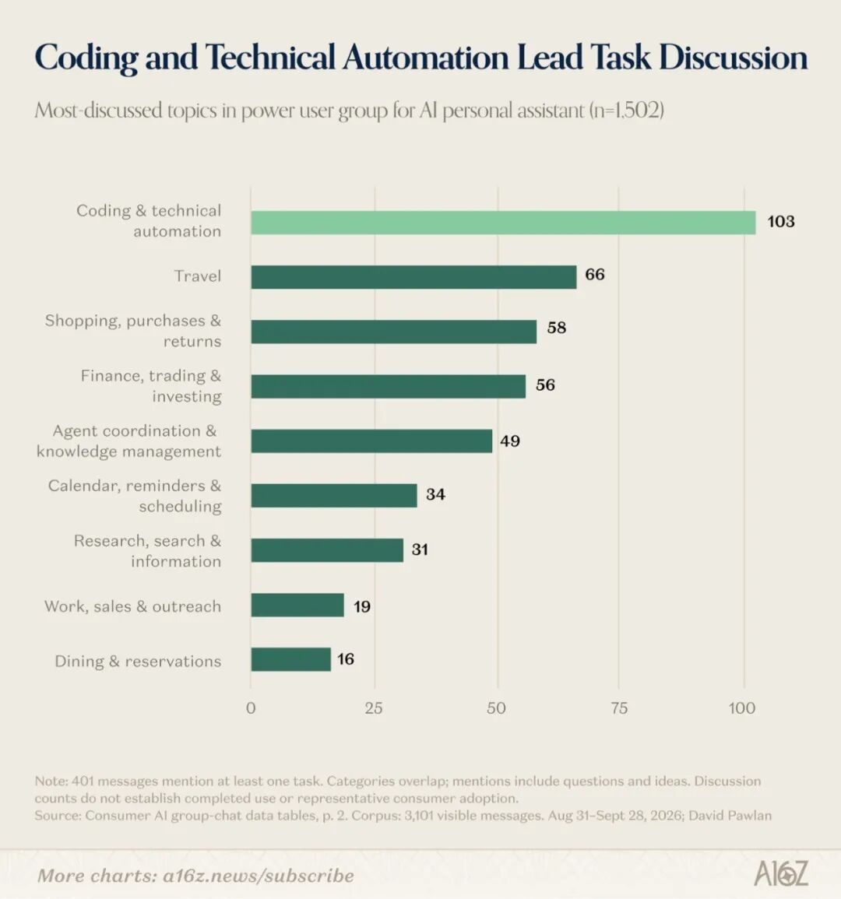
agent 早期用户讨论最多的任务
agent 开始带来真实的流量和交易后，平台也开始选边。Amazon 在两周内就封掉了 Muse 的访问；Shopify、Instacart、OpenTable、Expedia、Ticketmaster、Plaid 等则签了官方集成。
六、大厂和老产品进场后，创业公司的机会在模型、人群和界面
上一期榜单放宽了门槛，允许生成式 AI 已成核心体验的老产品上榜。这一期它们已经很显眼：Canva 和 Notion 进了 web 榜前十，Figma 进了前 15；Superhuman（原 Grammarly）一直在 web 榜上半区，在支出榜上排第 4。
这些老产品里，有的只是让用户第一次接触 AI，用户深度使用时还是会转去 AI 原生产品；有的则是新进入者真正的长期威胁。报告总结了创业公司仍然守得住的四种位置：
这四种位置里，我最有体感的是服务特定人群。我自己做的就是垂直领域的产品，判断很简单：只要能提供更细分的场景、更好的体验、更顺手的界面，对用户某一方面的需求理解得更深，垂直领域永远有机会。
大厂整体人多、资源多，但分到某一个细分场景和领域上的投入，远远比不上一家只做这件事的小公司。报告在这一条里也写到，信息来源、隐私、和用户工作的契合程度，可能和底层模型一样重要。模型大家都能调用，对一个行业的理解，只能一点点做出来。
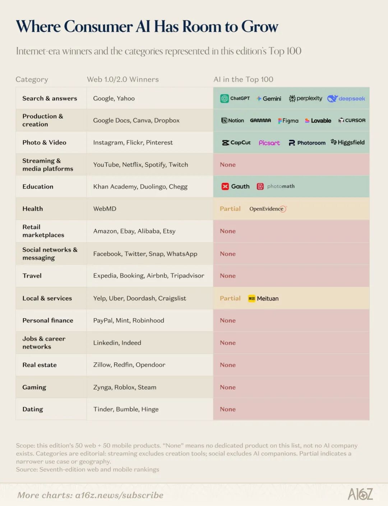
消费级 AI 还有哪些品类是空白
上面这张图把前两个互联网时代的赢家品类和本期 Top 100 对了一遍。搜索问答、生产创作、修图剪视频这三类已经有多个 AI 产品；流媒体、电商、社交、旅行、个人理财、招聘、房产、游戏、约会这九类，本期 Top 100 里还没有一个专门的 AI 产品。教育有 Gauth 和 Photomath 两个，健康只有 OpenEvidence 算半个，本地生活只有美团算半个。这里的「没有」只是指本期榜单上没有，不代表这些领域没有 AI 公司；社交这一格也没算 AI 陪伴类产品。
报告的判断是：上两个消费互联网时代最大的公司，很多是靠交易和网络效应做起来的，而今天头部的消费级 AI 产品几乎都没有真正的多人属性。
七、订阅制很可能在限制消费级 AI 的深度
回到开头那个问题：用的人这么多，为什么付费的这么少、用得这么浅？
报告认为，商业模式很可能是一个限制因素。头部消费级 AI 产品几乎都把最有价值的功能、甚至只是更长的使用时长，锁在付费墙后面，要么订阅，要么买额度。能付钱的人付了很多，但绝大多数用户不能或不愿为软件付钱。
web 榜上 44 个 AI 原生产品，全部已经在变现，方式是这样分布的：
这和前 AI 时代的消费互联网正好倒过来：
This is an inversion of the pre-AI consumer Internet, where consumers were the product instead of paying for the product.
这是对前 AI 时代消费互联网的倒置：那时候消费者本身就是产品，而不是为产品付钱的人。
2025 年，广告占 Meta 收入的 97.6%、Alphabet 的 73.2%；Amazon 单独披露的订阅服务收入是 496 亿美元，只占总收入的 6.9%。订阅制不是做不成大生意，但历史上做成的主要是媒体：全球前 20 的消费订阅产品里，65% 是 Netflix、Hotstar、Spotify 这样的媒体公司。ChatGPT 用三年半就挤进了这个前 20，本身已经很不容易。
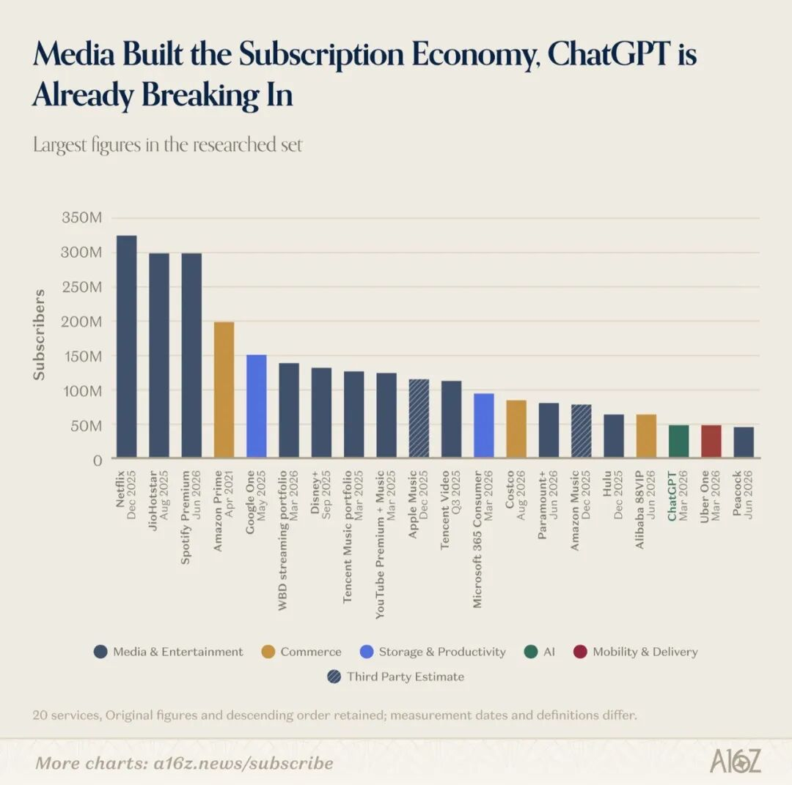
媒体撑起了订阅经济，ChatGPT 已经挤进来了
为什么 AI 公司偏偏只能靠订阅？因为广告和交易抽佣都需要先有大规模用户。过去互联网产品服务一个用户几乎不花钱，可以先免费烧出用户密度再变现；AI 产品的模型成本太高，早期放弃收入不是一个选项。报告认为，随着开源模型越来越多，加上产品能把必须用顶级模型的任务和可以用便宜模型的任务分开，这个约束会慢慢松动。
新的路径已经在出现：
Olivia Moore 在播客里说得更直接。作为一个押注消费级 AI 的投资人，她说自己并不一定希望那 4.5% 直接付费的人群继续扩大：
I actually don't necessarily want to see that 4.5% of people paying for AI products directly expand
其实我并不一定希望看到那 4.5% 直接为 AI 产品付费的人群扩大。
她的意思是，消费级 AI 不能只靠让更多人掏订阅费来长大，广告和交易这些「用户不直接掏钱」的模式必须回来。
订阅制让消费级 AI 先在愿意花钱做东西的人身上站住了脚，但很可能也是它走不进更多人日常生活的原因。
八、下一批大产品，可能来自让人愿意花时间的 AI
读完报告和播客，我最在意的一个判断来自播客里的一句转述。Olivia 引用了被投公司 Wabi 创始人的话：
most people aren't looking to save time. They're looking for ways to spend their time.
大多数人并不是在找节省时间的办法，他们在找的是把时间花在哪里。
这句话给第七节的商业模式问题补上了另一面。订阅制解释了为什么付费的人少，这句话解释了为什么付费的是这一批人：支出榜上排在前面的，大多是帮人做东西、提效率的工具，Reface、NovelAI 这类偏娱乐的产品也在，但排在第 18、第 33。
同一期播客里，另一位合伙人 Josh Elman 当场补了一句：这群人花钱，买的不只是省下来的时间，还有把脑子里的想法真正做出来的乐趣。两种说法指向同一个方向：要触达那 4.5% 之外的人，AI 产品得让人愿意把时间花在上面。
这类产品已经有了苗头。character.ai 在 web 榜第 8，Emochi 第 32，本期被单列出去的 NSFW 产品流量更大。但上一个互联网时代最大的几类花时间的产品，流媒体、社交、游戏、约会，在这期 Top 100 里还没有一个专门的 AI 产品。
消费级 AI 的下一批用户，可能要靠让人愿意花时间的产品来带。
第 8 期榜单出来时，我会先看这几格有没有被填上。